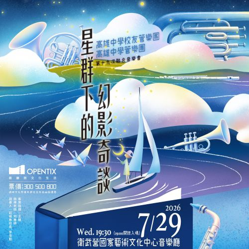

夜幕低垂，說書人化身嚮導，以音符翻開神祕物語。邀請您在星群下，聆聽關於夢與記憶的幻影奇談。
流星群の物語～はかなくも壮大な宇宙へ～ - 三浦真理（arr. 佐川馨）
撰文：梁詠誠
夜空に輝く無数の星達。流星群。その星の一つ一つにこめられたストーリー。
夜空中閃耀著無數星辰，以及流星雨。每一顆星星，都蘊藏著屬於自己的故事。

本曲由日本作曲家三浦真理創作，其創作原型可追溯至作曲家早年所寫的長號重奏作品《流星》。此後經歷銅管八重奏版本的改編，最終在編曲家佐川馨為管樂團調整下，發展為今日的管樂作品。
本曲以夜空中閃爍的群星與流星雨作為意象，描繪浩瀚宇宙中無數生命彼此交會、閃耀與消逝的過程。正如每顆星星都擁有屬於自己的故事，存在於宇宙中的每一個人，也同樣擁有獨一無二的人生軌跡。雖然相較於廣袤宇宙，人類的生命顯得短暫而渺小，但也正因如此，每一道曾經劃過夜空的光芒，才更加值得珍惜與記憶。
作品副標題《致虛幻而壯闊的宇宙》點出全曲最核心的思想。在音樂表現上，作曲家充分發揮管樂器豐富的色彩變化與空間感，樂曲時而以透明而寧靜的音響描繪深邃的夜空，時而透過快速流動的旋律與層層堆疊的聲響，呈現流星劃破天際的瞬間光輝。
隨著不同聲部交替成為主角，又彼此支撐與襯托，彷彿夜空中眾星各自閃耀，卻共同構成星河一般，展現出木管與銅管之間協作共鳴的魅力。
本曲並非描寫單一英雄或主角的故事，而是描繪無數個體共同存在的宇宙圖景。在作品之中，每個聲部都可能在某個時刻成為最耀眼的星辰，也可能轉而成為支撐他人的背景星光。這樣的設計不僅體現了作曲家對合奏精神的理解，也賦予作品更深層的人文意涵。
當樂曲最終回歸平靜，彷彿流星雨逐漸消失於夜空，只留下靜謐而深遠的星光。
期許聽眾也能在這片星空之中，找到屬於自己的那一段故事。